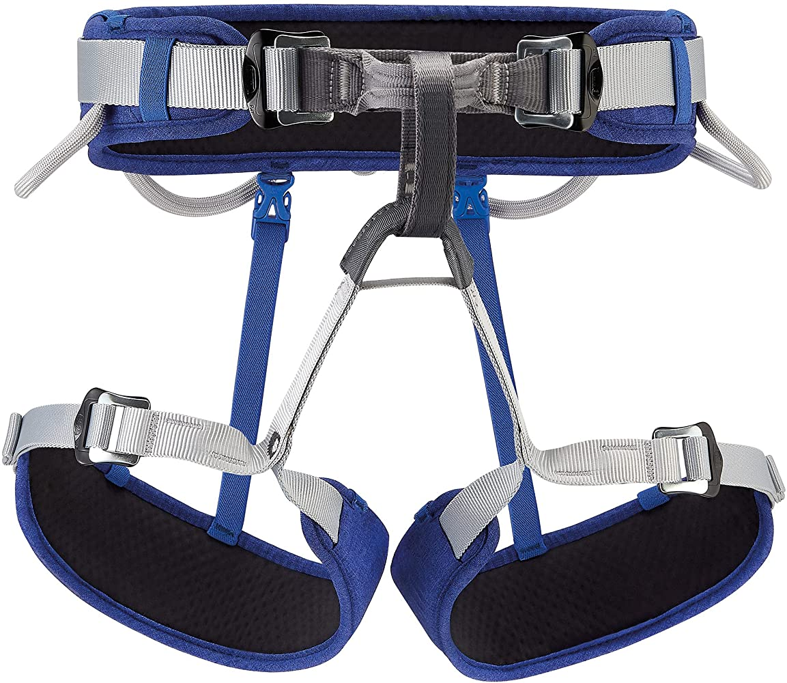

While on our site one could scroll through our various climbing equipment so they could learn more about the sport they love! We have extensive explanations of various climbing gear and photos to go with it so you can learn everything there is to know about the gear you are researching.Our site is split into two main categories. Category one is indoor climbing and category two is outdoor climbing. It is important to know that many outdoor and indoor climbing gear overlaps so you may find the same gear on both pages. We also organized our gear into difficulty levels. At the tops of our pages are beginning climbing gear, or what we like to call, the basics. The basics are the gear that every climber needs to have a great and successful climb. Then it moves on the moderate. These are the gear that opens new pathways to climb and makes your experience more comfortable and enjoyable while adding an extra layer of safety. Then we have the expert gear. This type of gear will be towards the bottom of our site pages. This gear is leaned more towards more of the extreme climbers who need the gear for specific climbs. The gear adds extra safety while opening new ways to indoor or outdoor climbing.
This is a climbing harness. It is a device made of strong materials and padding so you can attach roped and gear. The harnesses is the most importaint peice of climbing gear because it allows you to attach yourself to rock walls and to ropes. Without a harness most rock climbing out be impossible. To use the harness you slip you legs through the holes and lift the band ubove your waste and tighten. Make sure you purchasea harness that fits you correctly. Harnesses usually cost from $50 to $130 dollars.

Climbing Shoes are very importain to any rock climber. Rock climbing shoes are made to be fight fitted so you can get the best climbing experiance. Rock climbing shoes allow the climber to fit their foot in smaller places so they have better grip on the walls. Climbing shoes are tipically pointed at the toes so you can grip even the smallest of holds. Make sure you buy shoes that are very tight. The shpes should squish you feet and crush your toes. Climbing shoes can range from $70 to $300.

Chalk bags are great tools for every rock climber! The chalk bags are designed to hook onto the back of you harness or hook around your waist. The bag will hold the essential chalk that every climber needs. Chalk bags can also hold brishes and have compartnments to hold your phone, car keys, and snacks! when you buys a chalk bag make sure its the right size for your hand. Chalk bags range from $10 to $60.